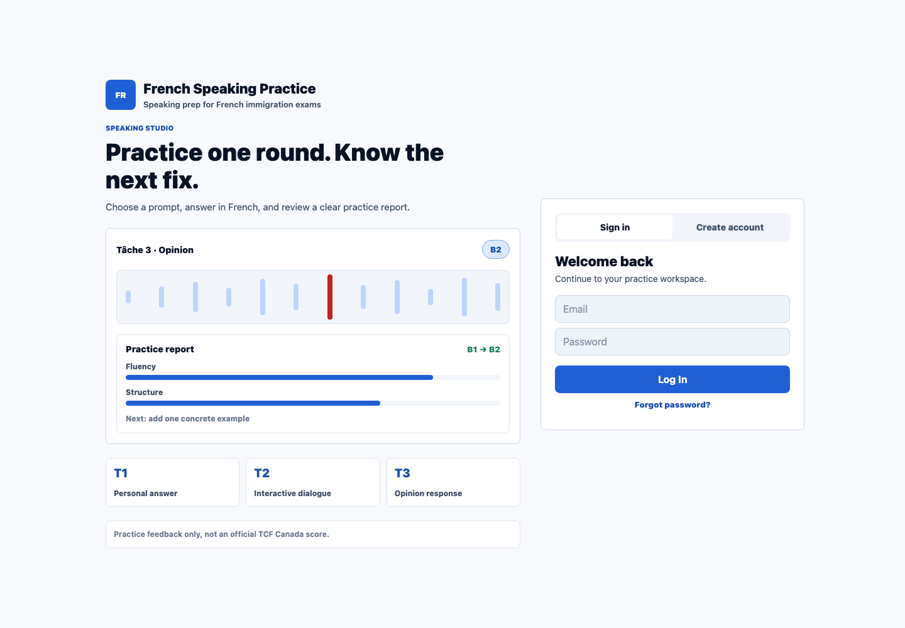

Choose level
Learners select a target such as A1, A2, B1, or B2 before practice.
AI speaking coach for French exam preparation
TCF Canada helps independent learners choose a target level, answer realistic speaking prompts, review AI-guided feedback, and return to focused practice.
Independent study product. AI feedback is learning guidance, not an official score.

Product workflow
Learners select a target such as A1, A2, B1, or B2 before practice.
Realistic speaking prompts keep each practice round concrete and focused.
AI-guided review highlights clarity, structure, fluency, and next steps.
Useful prompts can be saved for targeted review instead of one-time practice.
AI product experience
The product focuses on practical improvement: what sounded clear, what needs more structure, and what the learner can try in the next answer.


Cross-device readiness
The public product is live on web. Android device testing is active, while iOS release preparation and store readiness work continue.
Privacy and safety
This page presents the product experience without exposing source code, credentials, internal prompts, operational details, release artifacts, or private user data.
Feedback is learning support, not an official exam result or guarantee.
Public materials avoid sensitive implementation and account details.
TCF Canada is not affiliated with an official exam provider or government agency.